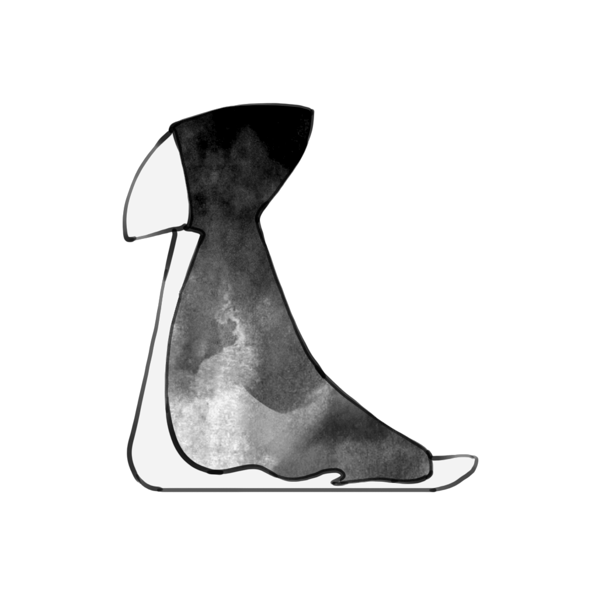
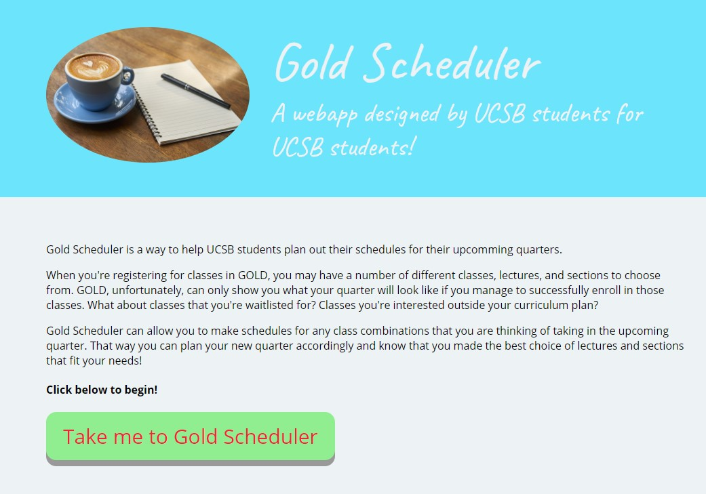

Beakon

"Beakon" is a 2D platform-adventure game made in Unity with a theme
of Restoring the World. It was made in a team of 8 during USC MEGA
Newbies & Vets Game Jam 2021. This game won
Best Art amoung 16 final game submissions.
As the lead level designer and one of the programmers in this team,
set up the scene and designed the overall level. Implemented the game's
player mechanics and some camera/environment features.
Check out our itch.io page for Beakon.
Feel Free to Try It Out!
Hedge Hug (Ongoing)
 "Hedge Hug" is a 2D single-player narrative-driven roleplaying game made in Unity.
It explores low self-esteem and social anxiety issues with interactive
narrative puzzles and emotional gameplay moments, through the lens
of a caring and sensitive hedgehog, Emma, a ceramic artist who
struggles with loving and trusting herself in her daily life.
"Hedge Hug" is a 2D single-player narrative-driven roleplaying game made in Unity.
It explores low self-esteem and social anxiety issues with interactive
narrative puzzles and emotional gameplay moments, through the lens
of a caring and sensitive hedgehog, Emma, a ceramic artist who
struggles with loving and trusting herself in her daily life.
As an engineer in this ongoing Master's Thesis Project in a team of eleven,
I have been optimizing game tools and systems, developing game features
and puzzles.
Swing It
 "Swing It" is a game made in Unity using C#. My friend and I finished this
playable game in 36 hours during LA Hacks 2019. We shared a mutual
interest in getting to fully know the ins and outs of Unity. This was
our first hackathon and we wanted to test our programming and
collaboration skills.
"Swing It" is a game made in Unity using C#. My friend and I finished this
playable game in 36 hours during LA Hacks 2019. We shared a mutual
interest in getting to fully know the ins and outs of Unity. This was
our first hackathon and we wanted to test our programming and
collaboration skills.
"Swing It" is a first-person simulation with multiple levels in
which the player can swing through block obstacles, achieve
various objectives such as collecting coins. We want to make the
player feel like Spider-Man.
Game Prototypes
 Here are some of my game prototypes made in Tabletop Simulator.
Here are some of my game prototypes made in Tabletop Simulator.
Click on the title or picture to check out more details on those
works.
Gold Scheduler

Gold Scheduler
is a webapp made using HTML, Python, JavaScript under the Flask Framework
with Heroku's PostgreSQL. Gold Scheduler is a webapp for UCSB students to
help them plan their fututre quarter schedules.
My teamates and I worked together using the Agile Development
approach. Making this project gave us a better mindset on teamwork
and greatly strengthened our collaboration skills.
Image Stippling
This is an Image Stippling work I made which I am proud of when I was learning
offline rendering. It creates a stippling image from an arbitrary image in C++.
Two different mappings were implemented, one uses pure 2D random uniform
seuqences and the other one uses 2D stratified sequences. The image on the
right is a comparison between an original image and a stratified sampled
image.
Some Works in C++
 Here are some of my coding works to showcase my C++ skills and
knowledge.
Here are some of my coding works to showcase my C++ skills and
knowledge.
Click on the title or picture to check out more details on those
works.